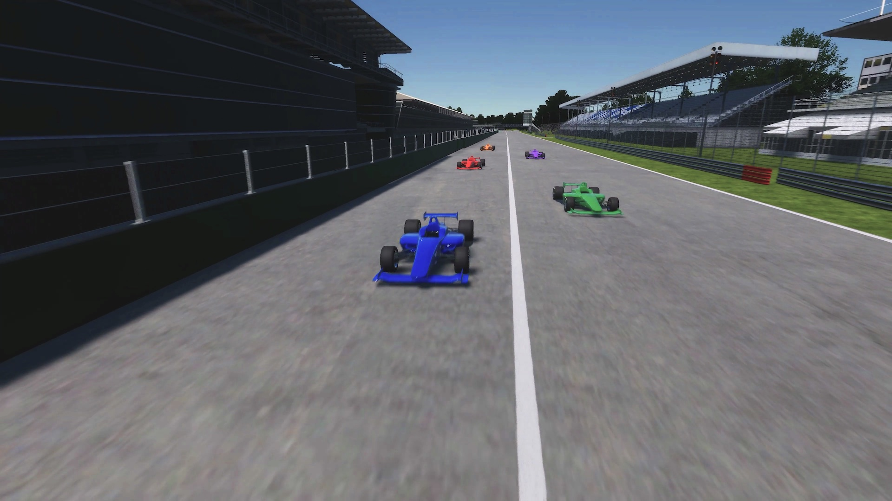
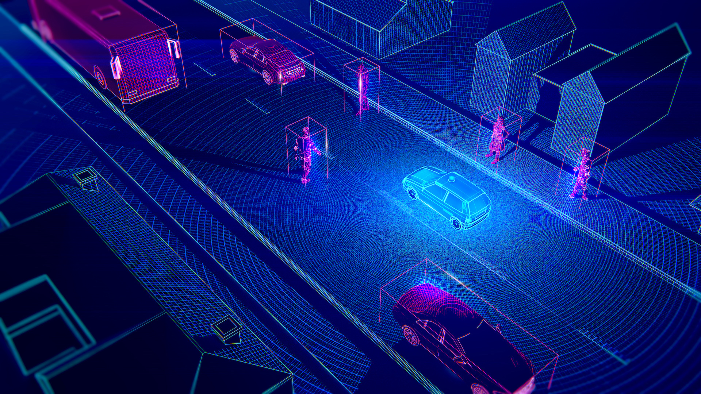
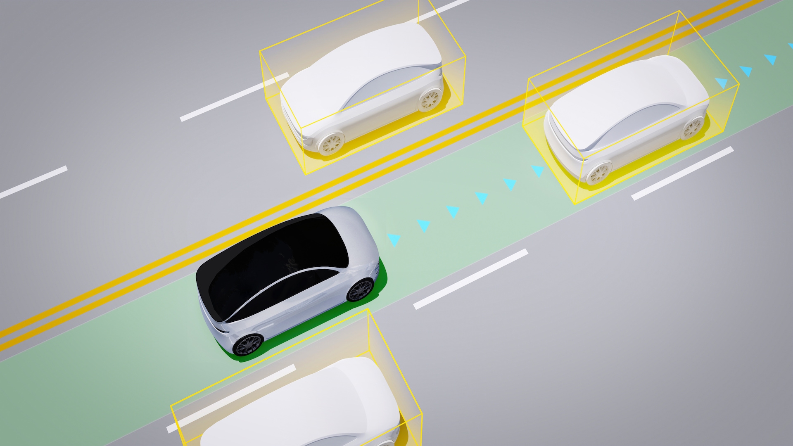
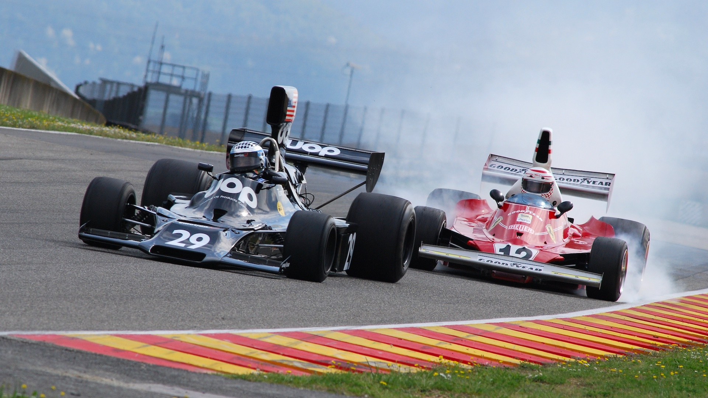

Japan Automotive AI Challenge 2023 (Simulation)

We are hosting the Japan Automotive AI Challenge 2023 (Simulation), a motorsport-themed software development competition. Participants will develop autonomous driving software based on Autoware.Universe, and integrate it into a racing car that runs in the End to End simulation space (AWSIM). The goal is simple, win the race while driving safely!
Competition Concept
As new technology fields called CASE become the center of competition in the automobile industry, there is a shortage of AI and IT engineers, and the need for them is rapidly increasing throughout the automobile industry.
As a new initiative to discover and develop engineers who will lead the automotive industry in the future, we will hold an international competition to compete for AI technology in autonomous driving.
We aim to build a framework that contributes to the further development of the automobile industry, starting from this competition, which is conducted through industry-government-academia cooperation.
Overview

The race in the End to End simulation environment is themed, aiming to contribute to the development of safe and robust autonomous driving technology for high-speed driving.
Autonomous driving in races involves various technical elements such as skidding, air resistance, vehicle response characteristics, tracking other vehicles, and behavior prediction. This competition offers participants an opportunity to work on developing autonomous driving software that incorporates these elements, featuring strategic driving planning and advanced vehicle control functions. We hope that engineers who learn new technologies through this "challenge" will contribute to technological innovation in the automotive industry.
The 3 Challenges
Challenge 1: Perception

Safety posits always highest priority in autonomous driving. The first step to avoid collisions is to recognize other vehicles from sensor data and predict their movements. The first challenge is the development of fast and robust recognition functions.
Challenge 2: Strategic Route Planning

The second challenge is strategic route planning. To drive faster than others, it is necessary to process the ever-changing surrounding environment and constantly pursue the optimal route.
Challenge 3: Control in High-Speed Driving

To win a race, control technology that realizes the optimal route planning is essential. The third challenge is the development of control modules that enable driving along strategic and complex routes while driving in high-speed.
Competition Description
Racing Course and Rivals

The course of this competition is approximately 5.8km long and has a complex shape including long straights and hairpin curves. You will drive on this circuit-themed course with several rival cars. The rival cars will accelerate and decelerate or change courses according to your autonomous driving car, so strategic route planning is required.
Evaluation Criteria
The goal of this competition is to win the race while driving safely. Therefore, the performance of your autonomous driving software will be evaluated from the following three perspectives. Details on scoring and rules are due to be published in this documentation later.
- Driving Distance - Reaching the goal of the course
- Safety - Driving without collisions or deviations from the route
- Speed - The time to the finish line
Development Environment
- Participants need to prepare a computer with Ubuntu 22.04 environment.
- Submit the developed repository, and scoring will be done in a cloud environment.
- Details of the competition repository and competition will be announced in early November.